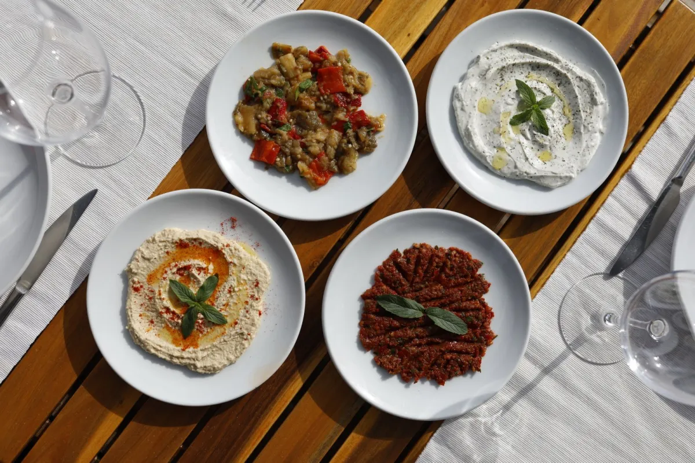
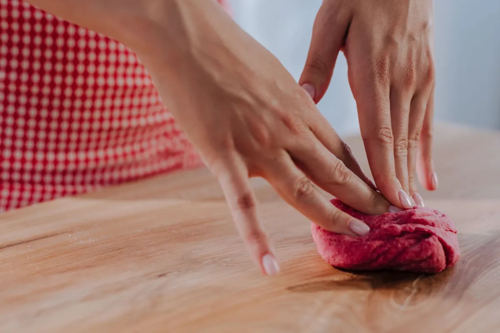

De klassieker
In een dürüm
Met sla, frisse groenten en granaatappelsaus in een zacht lavas brood. Zo bestelt negen van de tien gasten hem.
Het verhaal



Çiğ köfte komt uit het zuidoosten van Turkije, uit de streek rond Şanlıurfa. Eeuwenlang was het een gerecht van fijngekneed rauw gehakt met bulgur en kruiden, urenlang met de hand bewerkt tot een stevige, koude köfte. Vandaar de naam: çiğ köfte betekent letterlijk "rauwe köfte".
Sinds 2009 mag het in Turkije niet meer met rauw vlees worden verkocht. De hedendaagse çiğ köfte, ook die van ons, is daarom volledig plantaardig: fijne bulgur, tomaten- en paprikapuree, isot-peper en een royale hand kruiden. Dezelfde smaak, hetzelfde ritueel, zonder één gram vlees.


"Lekkere çiğ köfte! Sappig, volle smaak, met veel groenten en kruiden."
Dmitry ★★★★★
De klassieker
Met sla, frisse groenten en granaatappelsaus in een zacht lavas brood. Zo bestelt negen van de tien gasten hem.

De lichte versie
Schep een köfte in een knapperig blad sla, knijp er citroen over en vouw hem dicht. Fris en net zo Turks.
Wat erbij hoort
De isot geeft warmte, en daar hoort iets kouds naast: romige ayran (€ 2,00) of hartig şalgam-sap (€ 3,00).


"Altijd vriendelijk, altijd lekker! Ik kom er regelmatig."
Sofie Bende ★★★★★
Çiğköftem begon in 1993 als çiğköfte-maker in Turkije en groeide uit tot een keten met honderden verkooppunten in twaalf landen. In 2005 opende de eerste conceptwinkel van Turkije, in 2010 kwamen de eerste vestigingen naar Nederland.
De Bossche vestiging zit bij Sonay Supermarkt aan de Christiaan Huygensweg, vlak bij station Den Bosch-Oost. Klein, zonder poespas, en precies daarom goed. Wat gasten in reviews het vaakst noemen is niet eens het eten, maar de mensen achter de balie.
Twijfel of een allergie? Meld het in het opmerkingenveld bij je bestelling of via de contactpagina; de keuken denkt mee.
De wrap kost € 6,00 en staat klaar op de tijd die jij kiest.